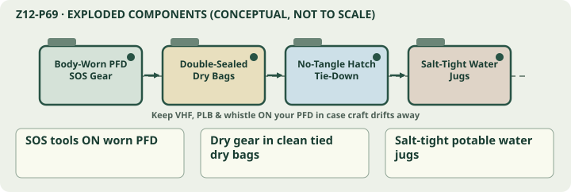

Z12-P69 · Extreme environments · New manuscript
Protect maritime drinking water and dry gear inside waterproof secured containers
Keep freshwater, spare dry layers, electronics and rescue signals intact and floating if a craft swamps or capsizes.
When it applies · Canoe trips, sea kayaking, small-boat coastal passages and wet maritime landings.
Equipment · Heavy-duty dry bags clipped/tied cleanly (no tangle traps), sealed rigid freshwater jugs and floating waterproof radio/phone pouch.

Actions
- Pack ALL spare dry warm layers, sleeping gear, first-aid supplies and paper charts inside double-sealed roll-top dry bags, securing them cleanly inside hatches or tied neatly so loose floating ropes cannot entangle swimmers during a capsize.[X05, E10, K09]
- Carry verified potable freshwater inside tough, sealed, saltwater-tight containers—never assume nearshore sea/estuary water can be treated in an emergency without desalination.[W06, X15, X05]
- Keep life-critical emergency items (whistle, VHF/PLB in waterproof case, signal light, small knife) attached DIRECTLY to your worn PFD—not inside the boat hull—so a separated craft never strips away your ability to summon rescue.[X04, X05, N05]
Failure recognition · Leaving the waterproof VHF radio, PLB and spare fleece loose in an open canoe that sweeps downstream away from capsized paddlers.[X05, X04, N05]
Verify · Confirm personal SOS tools ride on your PFD, dry bags seal watertight without tangle loops and freshwater jugs are locked salt-tight.[X04, X05, W06, ED]
Stop or change course · Damaged dry-bag seams, missing hatch covers or unsecured heavy loose gear that can sink or swamp a craft require correction before launching.[X05, E02]
Evidence and editorial notes
- E02 · NPS · Ten Essentials (current web edition)
- Section: Navigation; insulation; emergency shelter; emergency food and water · Conditions: Outdoor trips; adjust kit to season and route
Support: Carry essential systems including navigation, insulation, light, water and emergency shelter.
Limitations: Carrying items without practice or cold-weather verification does not ensure readiness. · Conflicting evidence: None; baseline kit system architecture.
Editorial note: Supports failure-mode packing and kit verification cards. · Specialist reviewer: Field education and search and rescue
Primary source · checked 2026-11-24 - E10 · NWS · What To Do If You're Caught in a Winter Storm (current web edition)
- Section: Outside > Protect yourself from frostbite and hypothermia · Conditions: Outdoor winter storm
Support: Keep clothing dry and avoid overexertion. Wetness accelerates cooling.
Limitations: Cotton retains moisture and accelerates conductive and evaporative heat loss. · Conflicting evidence: None; reinforces moisture-management layering.
Editorial note: Links sweat management to overnight insulation integrity. · Specialist reviewer: Cold-weather shelter and wilderness medicine
Primary source · checked 2026-11-24 - K09 · USDA Forest Service · Handtools for Trail Work (0523-2810-MTDC) (agency handbook)
- Section: Cordage, Anchors and Rigging Boundaries · Conditions: Non-life-safety camp lashing, tarps, haul lines and tie-downs
Support: Cordage strength drops significantly at knots, sharp bends, wet fibers, UV exposure and abrasion; inspect fibers before loading and never use unrated camp cord or improvised bindings for life-safety suspension or climbing.
Limitations: No universal breaking strength applies to natural plant fibers or weathered salvaged rope. · Conflicting evidence: Counters folklore claims equating improvised cordage to rated climbing rope.
Editorial note: Separates camp utility lashing/hauling from life-safety rigging. · Specialist reviewer: Rigging safety and materials mechanics
Primary source · checked 2026-11-24
Current assessment · W2C-E004 (2026-11-25) · Open: cited section not found in the source; escalated: Replacement support identified in FM 3-97.61 paras 4-1 to 4-3 (pages 4-1 to 4-3): sharp edges cut nylon rope under tension; leaving rope knotted or tightly stretched reduces strength and life over time; ultraviolet light deteriorates nylon; inspect before and after each use; select rope by task, type, diameter and tensile strength. Limits: No support found for the wet-fiber strength-loss part of K09. FM context is mountaineering rope, not camp cord. - N05 · NOAA SARSAT · Frequently Asked Questions (Current web edition)
- Section: Emergency beacon types and registration · Conditions: Emergency satellite distress signaling (406 MHz PLBs and EPIRBs)
Support: A 406 MHz distress beacon transmits into the Cospas-Sarsat system. Verify country code, registration and model capabilities separately.
Limitations: PLBs are one-way distress alerts only (no two-way texting), require clear sky view and must be reserved for grave and imminent danger. · Conflicting evidence: Distinguishes one-way 406 MHz PLBs from commercial two-way satellite messengers.
Editorial note: Anchors beacon selection, sky-view limits and registration cards in Z11. · Specialist reviewer: Search and rescue and emergency communications
Primary source · checked 2026-11-24 - W06 · CDC · How to Create an Emergency Water Supply (current web edition)
- Section: How to store emergency water; Safe storage containers · Conditions: Potable water intended for emergency storage
Support: Prefer sealed commercial water or clean food-grade tight-closing containers. Avoid containers that held toxic chemicals.
Limitations: Container shelf durability and rotation depend on plastic/material type and storage heat. · Conflicting evidence: None; reinforces strict raw-vs-clean segregation.
Editorial note: Used to enforce labeling and dedicated raw/potable vessel separation. · Specialist reviewer: Drinking-water safety and public health
Primary source · checked 2026-11-24 - X04 · US Coast Guard · Wearing Your Life Jacket (current web edition)
- Section: Wearing Your Life Jacket > Fit, Flotation and Cold Water · Conditions: Boating, paddling, coastal craft and icy-shoreline marine operations
Support: Wear a correctly fitted, fastened U.S. Coast Guard-approved life jacket suited to activity and wearer. Flotation reduces risk but does not guarantee airway position, especially when unconscious.
Limitations: Inflatable PFDs require arming inspection and are unsuitable for high-impact whitewater or non-swimmers per label. · Conflicting evidence: None; aligns with USCG-SAFE.
Editorial note: Grounds PFD readiness and maritime abandonment cards in Z12. · Specialist reviewer: Maritime safety and search and rescue
Primary source · checked 2026-11-24 - X05 · US Coast Guard · Boating Safety Resource Center (current web edition)
- Section: Boating Safety > Float Plans, VHF-DSC, Weather and Abandon-Ship Limits · Conditions: Inland large lakes, coastal waters and maritime travel
Support: File a float plan, monitor marine weather and VHF Channel 16/DSC where equipped, stay with a swamped buoyant hull when safer than swimming to distant shore and maintain visual/electronic distress signals.
Limitations: Open-water craft operations require vessel-specific seamanship beyond general survival cards. · Conflicting evidence: None; aligns with NOAA-MARINE and NOAA-SARSAT.
Editorial note: Anchors maritime communication, hull-stay and distress cards in Z12. · Specialist reviewer: Maritime safety and USCG-aligned review
Primary source · checked 2026-11-24 - X15 · NOAA NOS · Tides and Water Levels Education Tutorial (current web edition)
- Section: What are Tides? · tidal range and tidal current · Conditions: Ocean coastlines, sea caves, tidal flats and rocky headlands
Support: Tidal height and tidal current describe different properties. Rising or falling water may be accompanied by horizontal flow.
Limitations: Local timing and accessible routes require the actual site forecast and observations. Do not infer a safe route from a general tide stage. · Conflicting evidence: None; pairs with NOAA-COAST.
Editorial note: Grounds tidal-cutoff, headland and mudflat planning cards in Z12. · Specialist reviewer: Coastal navigation and marine safety
Primary source · checked 2026-11-24
Current assessment · A04-X15 (2026-11-25) · Bounded support confirmed (A04): Height and horizontal motion are different measurements. No timetable, passage window or slack-water inference. Limits: Specialist review PENDING (Coastal navigation and marine safety); publication HOLD. All release decisions pending.
Source lineage · USCG boating safety and CDC emergency water; new manuscript · Classification · New manuscript.